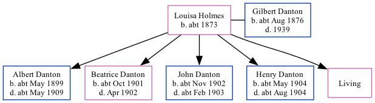

Louisa Holmes, the wife of Gilbert Edmund Danton (the first cousin twice-removed on the father's side of Nigel Horne), was born in Lambeth, London, England c. 18731 and married Gilbert (with whom she had 5 children: Albert Victor, Beatrice Maud, John William, Henry Thomas and Eleanor Susannah, along with 1 surviving child) in West Ham, Essex, England around Nov 18961. On Apr 2, 1911, she lived in West Ham1.
1911 England Census Online publication - Provo, UT, USA: Ancestry.com Operations, Inc., 2011.Original data - Census Returns of England and Wales, 1911. Kew, Surrey, England: The National Archives of the UK (TNA), 1911. Data imaged from the National Archives, London, England. (Marital Status: MarriedRelation to Head of House: Wife)
Family Tree

Map
Generated by Ged2Site. Last updated on Apr 1, 2025